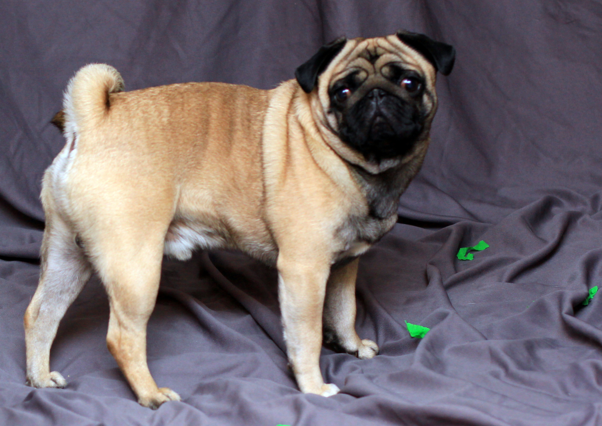
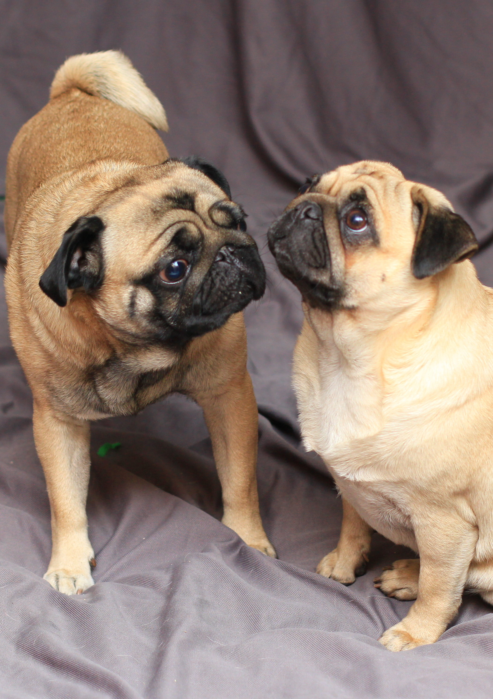

Мопсы-лучшая порода собак
Мопсы были привезены из Китая в Европу в XVI веке и были популярны в Западной Европе и Нидерландах. В Соединённом Королевстве в XIX веке Королева Виктория развила страсть к мопсам, которую она передала другим членам королевской семьи.
Мопсы известны тем, что являются общительным и нежными собаками-компаньонами. Американский клуб собаководства описывает личность породы как «уравновешенный и обаятельный». Собака этой породы была признана лучшей на «Всемирной выставке собак» 2004 года.
Мопс — маленькая декоративная собачка, которую издавна держала знать. Собака с живым, весёлым и при этом уравновешенным характером, благородная и привязчивая к хозяину. Мопсы живут 13—15 лет
 >
>
Из истории породы
Мария Фёдоровна с детьми (слева направо) Георгием, Ксенией, Николаем и мопсом
Мопс — древняя китайская порода. В ранних китайских рукописях упоминаются «квадратные, низкие собаки с короткой мордой». В Китае существовали собаки «Ха Па» и «Ло Цзе». Две эти разновидности были очень схожи и различались только длиной шерсти. «Ха Па» были длинношёрстными. Вероятно предками мопсов были «Ло Цзе», они походили на пекинесов, но обладали короткой шерстью. Мопсы были собаками знати и проживали в богатых домах. В те времена у мопсов ещё не было столь глубоких морщин, но четкий рисунок складок на лбу проявлялся и был схож с иероглифами. Именно поэтому морщины на лбу мопса называли императорским знаком. Мопс попал во Францию с турецким флотом в 1553 году. Позже эта порода стала любима и в Нидерландах, где её окрас уподоблял цветам правящего дома Оранских. Когда Вильгельм III Оранский стал английским королём, он и его жена Мария II привезли в 1689 году мопсов из Нидерландов. Эта порода была весьма популярна около двух столетий. Но постепенно мопсов становилось меньше. В 1864 году для английской королевы Виктории, пожелавшей иметь у себя эту породу, с трудом разыскали одну собаку. Через 20 лет был создан первый клуб любителей мопсов, и благодаря ему порода начала улучшаться и приобретать те стандарты, которые и поныне ценятся в этих собаках[5]. Первая жена Наполеона, императрица Жозефина, имела любимого мопса по кличке «Фортуна».

Мопс — собака квадратного формата, компактная и пропорциональная. К мопсу подходит девиз multum in parvo. Стандарты рубежа XX—XXI веков подразумевали вес породы 6—8 кг. В стандарте не оговаривалась высота в холке, но на практике оптимальная высота сук должна быть в диапазоне 25—30,5 см, кобелей — 30,5—33 см. Стандарты породы второй половины XIX века предписывали высоту в холке 30,5 см, вес — 7 кг.

Голова крупная, круглая, но не «яблокоподобная», без выемок на черепе. Морда короткая, тупая, квадратная, не вздёрнутая. Явно обозначены морщины. Правильная голова мопса должна вписываться в квадрат. Мочка носа находится на средней линии, проходящей через середину глаз и разделяющей лицевую часть головы на две почти равные части — лобная часть и морда. При взгляде спереди череп должен быть почти плоским между ушами; куполообразный (выпуклый) или «яблокообразный» череп — серьёзный недостаток. При взгляде сбоку лоб мопса не должен выступать вперед наподобие лба японского хина. Морда должна быть короткой, плоской и широкой, практически равной ширине лба. Провалы под глазами свидетельствуют о плохой наполненности морды. Зрительно это делает морду более длинной, и типичный вид головы мопса как единого целого пропадает. Создаётся впечатление, что голова собаки состоит из двух частей, так как провалы под глазами резко отграничивают морду от лицевой части черепа. Нижняя челюсть должна быть широкой, а подбородок достаточно выраженным. В противном случае вся морда будет выглядеть недостаточно развитой и зауженной.
Разновидности пропорций головы
Переносица у мопса должна быть слегка выражена, так как полное её отсутствие ведёт к проблемам с дыханием и, как следствие, к сердечной недостаточности, аритмии и обморокам при сильных волнениях и физических нагрузках. Переносица желательна абсолютно прямая, она не должна быть вогнута, иначе возникает так называемая «курносость», более характерная для японских хинов, гриффонов или французских бульдогов. У мопсов, в отличие от этих пород, носовые ходы укороченные, а не искривлённые. Ещё большим недостатком, чем вздёрнутая мочка носа, является морда, опущенная вниз. При опущенной морде выражение «лица» у мопса становится скорбным и плаксивым. Что касается морщин, то желательно, чтобы они образовывали красивый, по возможности симметричный рисунок, но при этом не должно создаваться впечатление сырости и отвислости кожи под глазами и у губ, наподобие головы английского бульдога или шарпея. Брыли не должны отвисать. Форма складки над носом не имеет значения, однако большинство экспертов предпочитают сплошную, а не прерывистую, считая, что при этом голова мопса выглядит более породно. Складка должна гармонировать со всей лицевой частью, то есть не быть излишне толстой, тяжёлой и нависающей над переносицей, что утяжелит голову в целом, и не быть слишком тонкой, что внесёт дисгармонию в массивную голову с большими глазами и широкой, наполненной мордой. Мочка носа должна быть только чёрной; осветлённая — большой недостаток. Ноздри большие и хорошо открытые.

Глаза крупные, круглые, выступающие, тёмные.
Разновидности пропорций глаз
Большие глаза мопса должны быть посажены достаточно широко, на одной линии с носом. Близкопосаженные глаза придают мопсу нетипичный, глуповатый вид. Характерное для мопса выражение бдительности и озорства будет потеряно. К счастью, подобный недостаток встречается нечасто. Светлоокрашенные глаза — серьёзный недостаток, также как и маленькие глаза или глаза, у которых сильно видны белки. К недостаткам относятся также раскосые, миндалевидные глаза и глаза чересчур навыкате.
Прикус — небольшой перекус. Перекошенный (кривой) рот, виднеющиеся зубы и высовывающийся язык крайне нежелательны. Передние зубы (резцы) широкой нижней челюсти всегда на прямой линии.
Уши тонкие, маленькие, мягкие, высоко посажены, плотно прилегают к голове. Две разновидности — «розочки» — маленькие уши, сложенные над головой, отведены назад так, что открыта внутренняя часть. «Пуговицы» — уши, заложенные вперед, краями плотно прижаты к черепу, закрывают внутренние отверстия. Предпочитаются последние.
